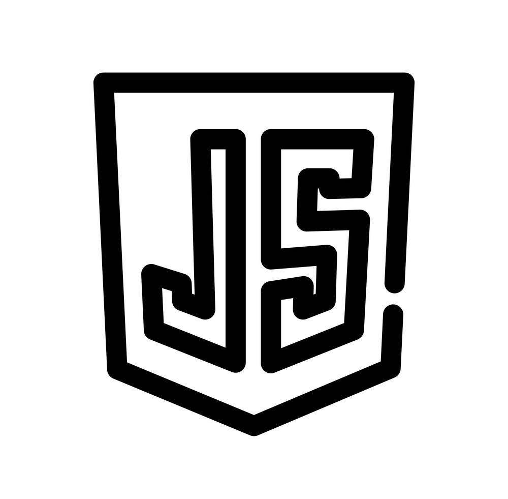

Skills
HTML

CSS

JavaScript

Java

Python

I am currently pursuing a Bachelor's degree in Computer Science at the University of Texas at Arlington. I am passionate about applying my technical knowledge to real-world settings and am actively seeking software development internship opportunities for the summer. With a strong foundation in programming and a drive to continually learn and grow, I am eager to contribute to innovative projects and gain valuable industry experience.